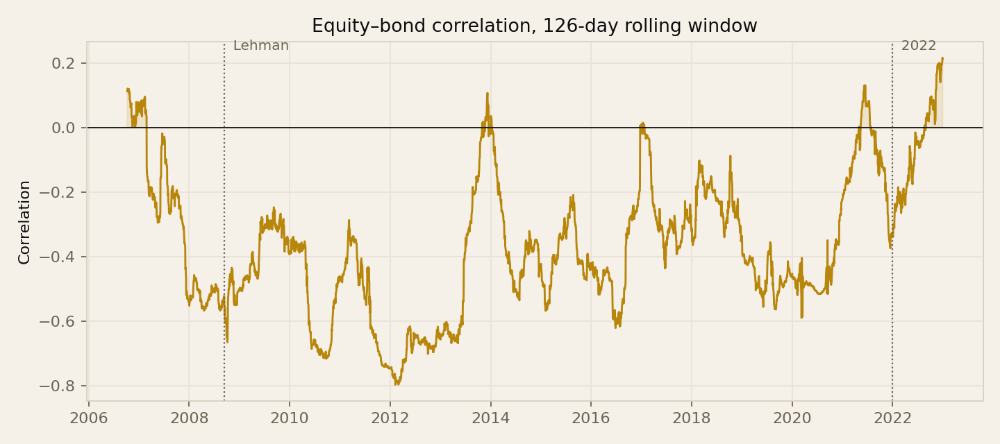
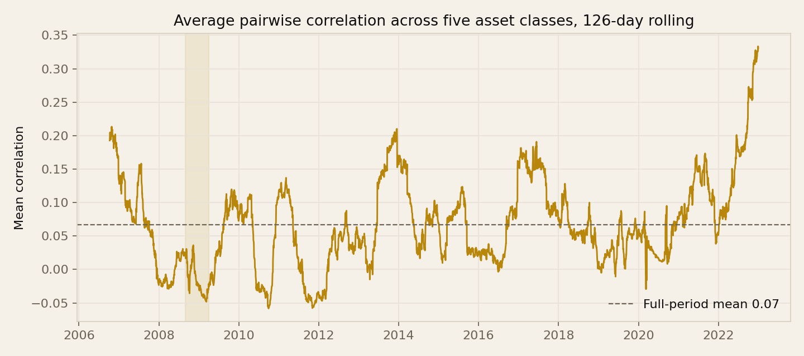

Diversification didn't fail in 2008
I set out to measure the thing everyone says about the financial crisis: that correlations converge and diversification stops working when you need it most. The data said the opposite. The bond hedge worked in 2008. The year it broke was 2022.
The plan was straightforward. Take five asset classes, measure how correlated they were before the crisis, during it and after, and show diversification thinning at the worst possible moment. It is one of the most repeated claims in finance, and I expected to confirm it in an afternoon.
Here is what came back.
| Period | Days | Mean pairwise | Equity–bond |
|---|---|---|---|
| Pre-crisis (2006–mid 2007) | 307 | 0.155 | +0.018 |
| Crisis (Sep 2008–Mar 2009) | 146 | −0.031 | −0.444 |
| Recovery (2010–2019) | 2,516 | 0.040 | −0.483 |
| 2022 | 251 | 0.251 | +0.084 |
The crisis period has the lowest average correlation of the four. Equities and long-dated Treasuries moved at −0.44 through the worst of it and stayed near −0.48 for the decade that followed. On this basket, in the crisis everyone studies, diversification did what it was supposed to do.
The period where it failed is 2022. Average pairwise correlation of 0.251, the highest of any window measured, with the equity–bond relationship turning positive. On a rolling basis the peak falls on 29 December 2022 — the most correlated single point in seventeen years of data.

What was actually converging in 2008
The cliché is not baseless. It is imprecise about which assets, and the imprecision hides the mechanism.
| Period | Equity–oil | Equity–gold | Risk-asset mean |
|---|---|---|---|
| Pre-crisis (2006–mid 2007) | +0.082 | +0.246 | +0.259 |
| Crisis (Sep 2008–Mar 2009) | +0.559 | +0.039 | +0.271 |
| Recovery (2010–2019) | +0.422 | −0.016 | +0.186 |
| 2022 | +0.108 | +0.193 | +0.241 |
Equity–oil correlation went from +0.08 to +0.56, close to a sevenfold increase and the clearest convergence anywhere in the data. Gold moved the other way, from +0.25 down to +0.04, decoupling from equities precisely when that was useful. The average across the three risk assets barely shifted — 0.259 to 0.271 — because those two effects largely cancelled.
So the aggregate figure conceals two opposite movements. Reporting only the mean pairwise correlation would have missed the entire story, in both directions.
Two crises, two kinds of shock
The difference between 2008 and 2022 is not severity. It is what was being repriced.
2008 was a growth shock. Expected earnings collapsed, and so did expected demand for oil, which is why equities and oil fell together for the same underlying reason. Policy rates were cut and investors moved into government paper, so Treasuries rallied while everything cyclical fell. A portfolio holding equities and long bonds was hedged, because those two respond to a growth shock in opposite directions.
2022 was a discount-rate shock. Inflation rose, policy rates followed, and a higher discount rate reduces the present value of any future cash flow — a company's earnings and a bond's coupons alike. Nothing was hedged, because the shock reached both legs of the hedge through the same channel.
The bond hedge is not a property of bonds. It is a property of the kind of shock that happens to arrive.
That is a narrower and more useful claim than "correlations converge in a crisis." Negative equity–bond correlation holds when the driver is growth or credit. It inverts when the driver is inflation or policy. Anyone whose portfolio depends on that hedge is holding a view about which kind of shock comes next, whether or not they have framed it that way.

What this does not show
- The basket has no credit exposure. The 2008 correlation story is largely about corporate credit, securitised products, emerging markets and hedge-fund positioning, none of which appears in these five ETFs. The convergence was real; it happened in assets I did not measure.
- Treasuries benefit from a flight to quality, so including them makes a negative equity–bond reading in a credit crisis close to inevitable. That is a real property of the asset rather than an artefact, but it does mean this basket was always likely to look well diversified in 2008.
- Short-dated Treasuries have very low volatility — a daily standard deviation of 0.09% against 1.27% for equities — which drags the mean pairwise figure toward zero and makes it a coarse summary.
- The sample starts in April 2006, limited by the oil ETF's inception, leaving roughly fifteen months of pre-crisis baseline.
What I would take from it
Report the components, not just the aggregate. Mean pairwise correlation was flat across the crisis while two of its constituent pairs moved sharply in opposite directions. A single summary number was actively misleading here, and I would have published the wrong conclusion had I stopped at it.
And be specific about which relationship you are relying on. "Diversification failed in 2008" gets repeated often enough to feel like a fact. On this data it is not one. What failed was a particular set of assets under a particular mechanism — and the hedge most balanced portfolios actually depend on failed fourteen years later, under a different mechanism, in a year far fewer courses spend time on.
I went in expecting to confirm the standard account. The value of the exercise was in not doing that.
Notebook and data: GitHub repository · Related: The technique that worked perfectly and did nothing · More notes